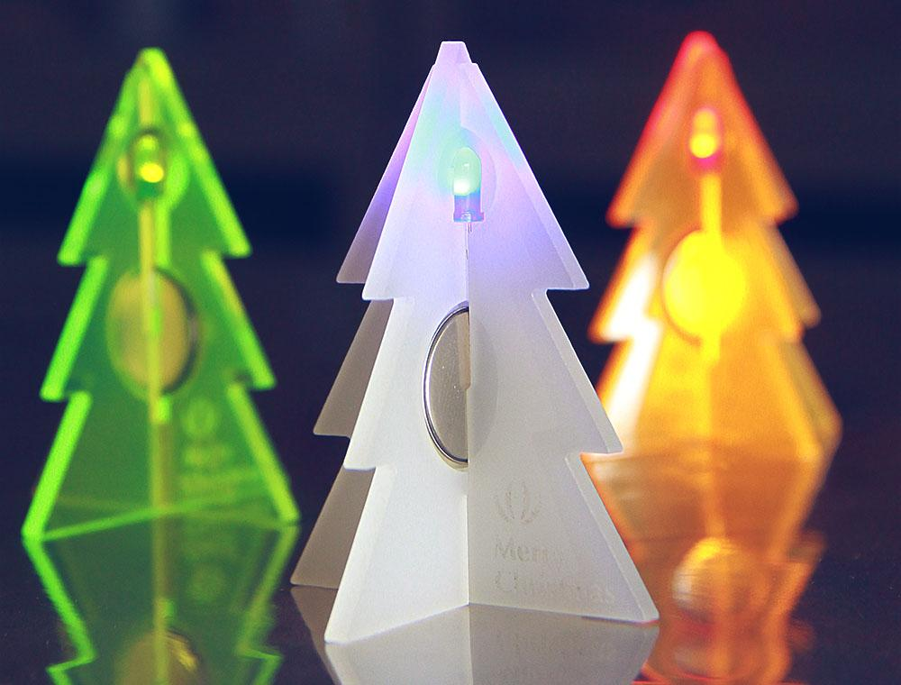
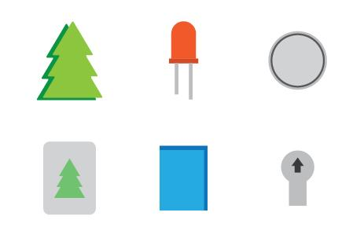
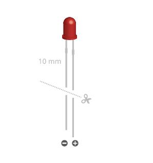
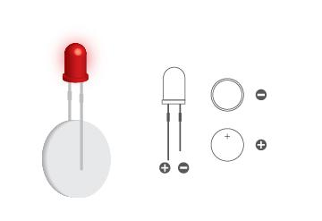
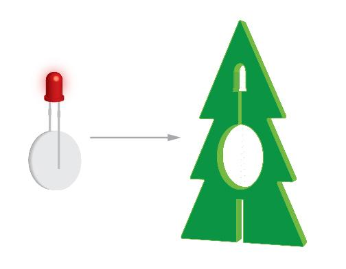
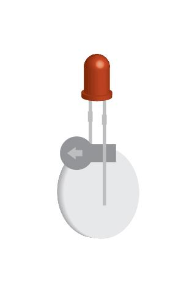
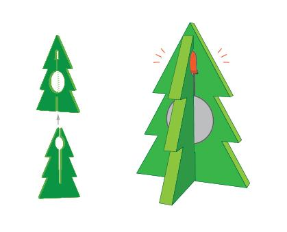

Merry Christmas! This is a kit to help you build little, glowing Christmas trees.
Each LED glows quite differently with various types of board, try them out.
And you can use the overlay sitcker to make a colorful Christmas tree.
SKU：110060051



The LED's leads are long. So,cut them short to 1cm using scissors.
Note: The longer lead is positive terminal.

The coin battery has positive and negative sides.
The LED will glow when its positive terminal is connected
to the positive of the coin battery and negative terminal
to the negative of the coin battery.

Place the LED and coin battery into their respective slots in the board.

This arrangement would light up for several days. However,
you can switch it off by using the pull-tab. Use the overlay sticker
to make a colorful Christmas tree.

Fix one board perpendicular to another board like this.
Each LED glows quite differently with different material of board.
Try them out.